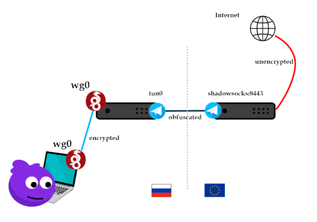

У Wireguard есть немало прекрасного, включая его простоту реализации, скорость и минималистичные клиенты, которые не вызывают проблем у пользователей.
В начале августа некоторые интернет операторы и провайдеры начали блокировку протокола WireGuard в РФ по его рукопожатию.
Лично испытывал блокировку у Мегафон и Теле2, но не заметил у Ростелеком. VPN по-прежнему работал через последнего.
Очень не хотелось отказываться от Wireguard в пользу прокси-серверов в духе VLESS+TLS-Vision, в виду того, что все наши пользователи уже сильно привыкли именно к Wireguard.
Поэтому вариант с кардинальной сменой клиентского софта не рассматривался.
Поскольку трафик Wireguard блокируется только на зарубежные адреса, было принято решение добавить еще один хоп в систему, а начальное подключение осуществлять к серверу в РФ.

Пользователь → Wireguard РФ → обфускатор в РФ → обфускатор в EU → Internet
В качестве обфускатора выбран shadowsocks. Причём с AED шифрованием. Оно уже детектируется GFW (https://en.wikipedia.org/wiki/Great_Firewall), но еще не детектируется у нас. Этот выбор позволит нам всё сильно упростить.
На сервере в EU ставим shadowsocks
apt update
apt install shadowsocks-libev
Редактируем файл /etc/shadowsocks-libev/config.json
{
"server":["0.0.0.0"],
"mode":"tcp_and_udp",
"server_port":8443,
"password":"YourPassword",
"timeout":86400,
"method":"chacha20-ietf-poly1305"
}
Конфиг говорит, что SOCKS5 сервер будет слушать порт 8443 по TCP/UDP с заданным метод шифрования и паролем.
Разрешаем коннект только с нашего российского сервера. Делаю через nftables sets
table inet filter {
set ALLOWED_SPROXY {
type ipv4_addr;
elements = { 195.0.0.356 }
}
chain input {
...
ip saddr @ALLOWED_SPROXY counter udp dport 8443 accept comment "SPROXY"
ip saddr @ALLOWED_SPROXY counter tcp dport 8443 accept comment "SPROXY"
...
}
...
}
Запуск
systemctl enable --now shadowsocks-libev
Проверим, что порт слушается
ss -nltu 'sport = 8443'
Переходим к серверу в РФ.
Считаем, что Wireguard у нас уже поднят на сервере. На нём не останавливаемся.
Поскольку shadowsocks это прокси, а нам нужно маршрутизировать весь трафик из РФ в EU, то нам нужен сетевой интерфейс на сервере, который будет перенаправлять трафик в shadowsocks.
Из коробки shadowsocks может либо слушать порт без SOCKS и отправлять его дальше (ss-tunnel), либо слушать socks сразу на хосте (ss-local). Оба варианта не подходят, т.к. ни один из них не создаёт интерфейс.
Поэтому мы ставим tun2socks.
https://github.com/xjasonlyu/tun2socks
Он будет использовать tun-интерфейс, с которого уже отправит трафик в shadowsocks в EU.
Я собрал из исходников
go install github.com/xjasonlyu/tun2socks/v2@latest
Но можно скачать и готовый бинарный файл.
В tun-интерфейс будет маршрутизироваться весь трафик, кроме трафика на сервер в EU и трафика localhost.
tun2socks умеет работать с протоколом shadowsocks, т.к. использует go-shadowsocks2-core, что очень удобно. Нам не придется ставить shadowsocks на сервер в РФ.
https://github.com/xjasonlyu/tun2socks/blob/main/proxy/shadowsocks.go#L9C2-L9C44
На сервере в РФ нужно поменять маршрутизацию.
То есть в итоге у нас будет два шлюза по умолчанию. Если по какой-либо причине tun отвалится, то сервер будет доступен.
Как добавить именно tun/tap (не tunnel) интерфейс в netplan, я не нашёл. Поэтому интерфейс и маршруты прописываю в хуки systemd unit. Подразумевается, что интерфейс сервера это ens3. IP адрес tun0 роли не играет.
[Unit]
Description=Tun2Socks
After=network.target
[Service]
Type=simple
User=root
EnvironmentFile=/etc/default/tun2socks
ExecStartPre=-ip tuntap add mode tun dev tun0
ExecStartPre=ip addr add 192.168.0.33/24 dev tun0
ExecStartPre=ip link set dev tun0 up
ExecStart=tun2socks -device tun://tun0 -proxy ss://chacha20-ietf-poly1305:${SSPASSWORD}@${SSIP}:${SSPORT}
ExecStartPost=bash -c 'MIP=$(ip r l |grep "default via" | cut -f3 -d" "); ip r del default dev ens3; ip r add default via $MIP dev ens3 metric 200'
ExecStartPost=ip r add default dev tun0 metric 50
ExecStartPost=ip r add ${SSIP}/32 dev ens3
ExecStopPost=-ip link set dev tun0 down
ExecStopPost=-ip link del dev tun0
ExecStopPost=-ip r del ${SSIP}/32 dev ens3
[Install]
WantedBy=multi-user.target
В файле /etc/default/tun2socks находятся реквизиты подключения в серверу в EU
SSIP=195.0.0.357
SSPORT=8443
SSPASSWORD=YourPassword
Запуск
systemctl enable --now tun2socks
Сетевая задержка между серверами колеблется в районе 25-30ms, что не так уж и плохо.
Итоговая скорость хорошая, клиенты довольны.
Рассчитываем, что с этим можно жить еще минимум пару-тройку лет не беспокоясь об усилении лютости DPI провайдеров.
В дальнейшем между перед shadowsocks планирую установить HaProxy для более гибкой балансировки на несколько узлов зарубежных VPN, а также для повышения отказоустойчивости. Но пока с текущей базой пользователей этот шаг выглядит избыточным.